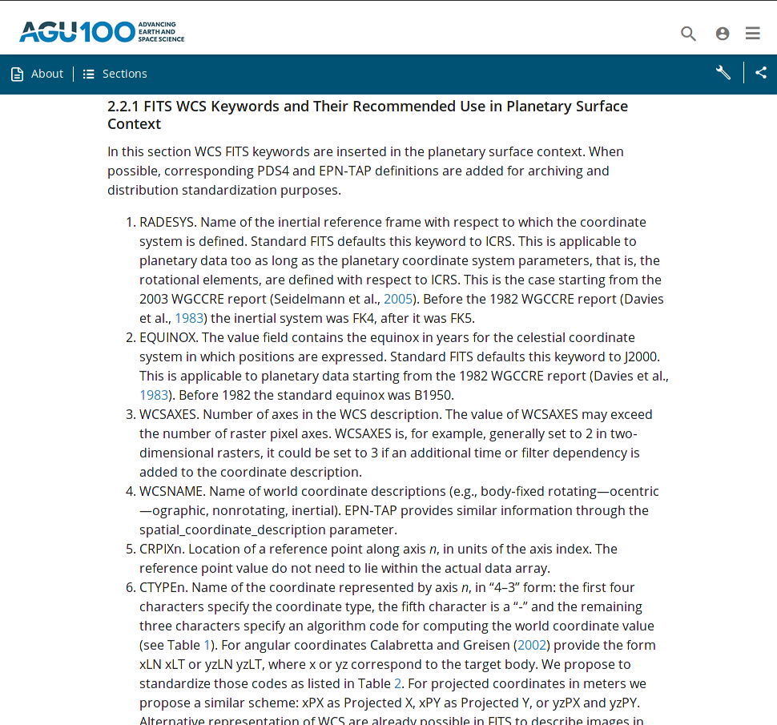

Chiara Marmo et al.
in the VESPA EUROPLANET 2020 collaboration
in collaboration with the USGS Astrogeology Center (Trent Hare)
May 2019 IVOA Interoperability Meeting
| Keyword | Type | Status | Definition | Unit |
|---|---|---|---|---|
| WGCCRECS | string | reserved | DOI of the WGCCRE report | |
| A_RADIUS | real | mandatory | semi-major radius, usually equatorial | meters |
| B_RADIUS | real | mandatory | intermediate radius, usually equatorial | meters |
| C_RADIUS | real | mandatory | polar radius | meters |
| OGCCODE | string | reserved | OGC code (if any) |
Alternate WCS description available in FITS
Need of CTYPE standardization (Coordinate types - projection type)
For angular coordinates the standard says xLON xLAT or yzLN yzLT, where x or yz correspond to the target body.
For projected coordinates in meters : yzPX as Projected X yzPY as Projected Y.
| Body | CTYPE Code |
|---|---|
| Earth | EA |
| Moon | SE |
| Mercury | ME |
| Venus | VE |
| Mars | MA |
| Jupiter | JU |
| Saturn | SA |
| Uranus | UR |
| Neptune | NE |
| Satellites (other than the Moon) | ST |
| Asteroids | AS |
| Dwarf Planets | DW |
| Comets | CO |
| FITS Name | FITS Code | PDS4 Name |
|---|---|---|
| Zenithal Equidistant | ARC | Azimuthal Equidistant |
| Zenithal Perspective | AZP | General Vertical Near‐sided Projection |
| Plate Carre | CAR | Equirectangular, Miller Cylindrical |
| Equidistant Conic | COD | Equidistant Conic |
| Conic Equal‐Area | COE | Albers Conical Equal Area |
| Conic Ortomorphic | COO | Lambert Conformal Conic |
| Mercator | MER | Mercator, Oblique Mercator, Transverse Mercator |
| Polyconic | PCO | Polyconic |
| Sanson‐Flamsteed | SFL | Sinusoidal |
| Ortographic | SIN | Orthographic |
| Stereographic | STG | Stereographic, Polar Stereographic |
| Gnomonic | TAN | Gnomonic |
| Zenithal Equal‐Area | ZEA | Lambert Azimuthal Equal Area |
|  |
Planetary WCS implementation in GDAL - Geospatial Data Abstraction Library: done in GDAL V3.0
References are available at
https://epn-vespa.github.io/geofits/#publications
Example scripts are available at
https://github.com/cmarmo/convertofits
Thanks for listening!